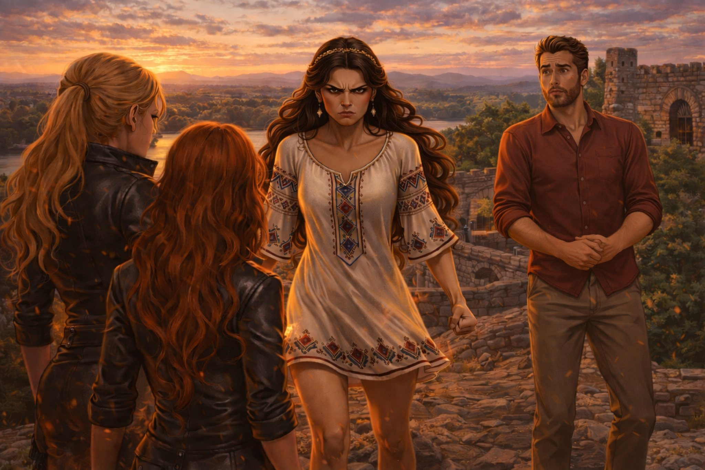

Поглавље 13: Сукоб са Рускињама
Página individual del capítulo con lectura y ejercicios.

Луис и Наташа настављају да траже прво камење на Калемегдану, када се две жене које су их посматрале приближавају. Оне имају озбиљан и претећи израз. Обе су високе, плавокосе и говоре на руском језику.
Једна од жена говори Наташи на руском:
"Тебе лучше забыть про камни. Уезжай из города сегодня же."
(На српском: "Било би боље да заборавиш на камење. Напуштај град још данас.")
Наташа их гледа збуњено. "Шта? Не разумем вас."
Луис, који говори руски, одмах схвата ситуацију. Он одговара на руском:
"Мы не знаем, кто вы, но оставьте нас в покое."
(На српском: "Не знамо ко сте ви, али оставите нас на миру.")
Жене изгледају изненађене што Луис говори њиховим језиком. Једна од њих нагло прилази Луису и хвата га за врат, покушавајући да га угуши. Наташа, видећи ово, експлодира од беса.
"Пустите га!" виче Наташа и насилно одвуче Луиса од њих. "Луис је мој!"
Жене се тргну и одлазе, али пре него што побегну, једна од њих шапне на руском:
"Ты дорого заплатишь за свою наглость."
(На српском: "Платићеш скупо за своју дрскост.")
Луис, иако мало у шоку, примећује нешто на земљи. То је камење, али у њему се види нешто светлуцаво. Он га подиже и открива да је унутар камена стари српски амајлија – зарка (традиционални српски амајлија за заштиту).
"Наташа, погледај ovo!" каже Луис, показујући јој амајлију. "Ово мора бити важно."
Наташа гледа амајлију, а затим Луиса. Њена страст и бес се претварају у осећај заштите према њему. "Ово је знак," каже она. "Морамо да наставимо да тражимо остала камења."
Луис кима, али осећа како Наташина страст расте. Она га грли и шапће: "Нико те неће дирнути. Ти си мој."
Они брзо напуштају Калемегдан, носећи амајлију са собом. Луис осећа како се њихова веза јача, али и да су у опасности. Рускиње нису биле случајне, а њихова претња је била јасна.
Крај тринаестог поглавља.